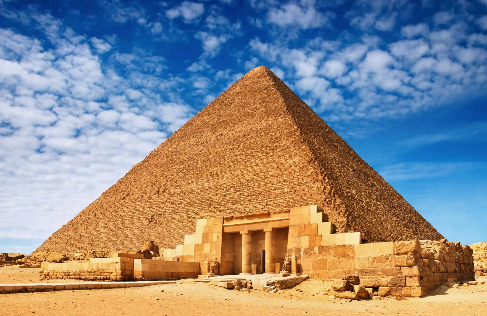
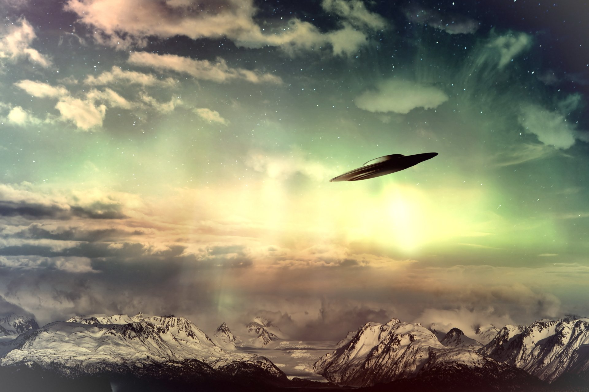
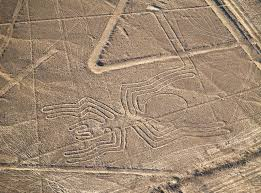
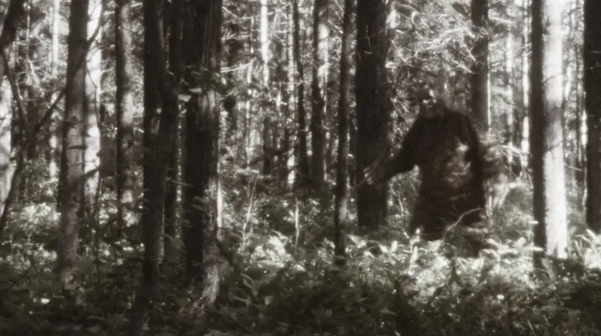
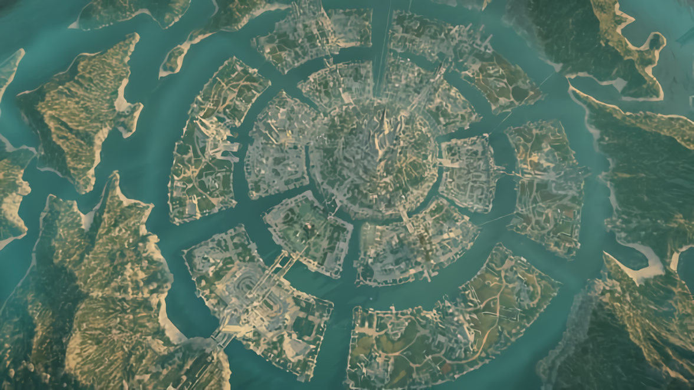

🔺
Piramida Agung Giza
🔺 Piramida Agung Giza, Mesir — Dibangun sekitar 2560 SM

🗿
Stonehenge, Inggris
🗿 Stonehenge, Inggris — Lingkaran batu berusia 5.000 tahun

🌊
Segitiga Bermuda
🌊 Segitiga Bermuda, Atlantik — Zona misterius yang menelan kapal & pesawat

🛸
Penampakan UFO
🛸 Penampakan UFO — Fenomena yang belum bisa dijelaskan ilmu pengetahuan

🌄
Garis Nazca, Peru
🌄 Garis Nazca, Peru — Gambar raksasa yang hanya terlihat dari udara

🦕
Monster Loch Ness
🦕 Monster Loch Ness, Skotlandia — Makhluk misterius di kedalaman danau

🦶
Bigfoot, Amerika Utara
🦶 Bigfoot (Sasquatch), Amerika Utara — Makhluk misterius setinggi 2-3 meter
🚢
Kapal Mary Celeste
🚢 Kapal Mary Celeste, Atlantik — Kapal tanpa awak yang ditemukan tahun 1872

🌍
Atlantis — Benua yang Hilang
🌍 Atlantis — Peradaban maju yang diklaim tenggelam dalam sehari semalam